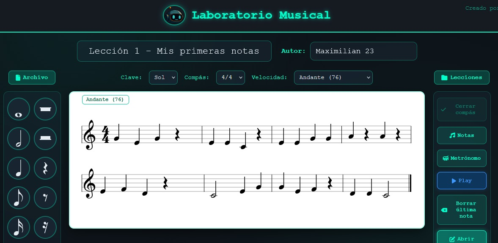
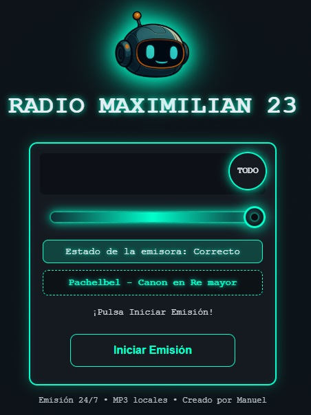
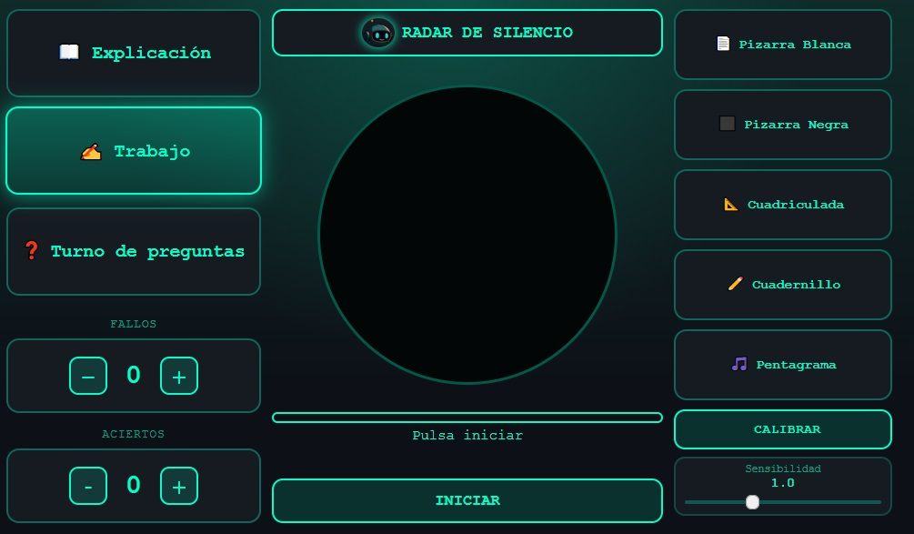
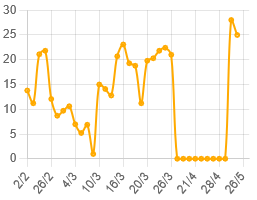

Asistente
IA educativa
Asistente Maximilian 23
Entrada principal del proyecto.
Maximilian 23 reúne herramientas digitales para el aula, en crecimiento constante durante el curso 2025/2026: asistente IA, reservas del aula, árbitro meteorológico, laboratorio musical, audiciones, radar de sonido, plástica y meteoescuela.
Entrada principal del proyecto.

Vídeo de presentación del proyecto: inteligencia artificial educativa creada en el aula.

Sistema de reservas del aula, en tiempo real y compartido entre todos los ordenadores.

Árbitro meteorológico que decide si hay recreo de partido, con control manual para el profesorado.

Lectura, ritmo, escucha y creatividad.

Reproductor de audiciones trabajadas en clase.

Recursos visuales y propuestas artísticas.

Radar de ruido y pizarras para usar en clase.

Espacio meteorológico educativo.

Entrevista en Canal Extremadura sobre Maximilian 23.